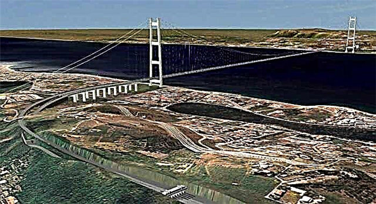

דף המידע על המיצר:
ביום ה---- למסע נבקר במיצר מסינה, המיצר אותו גריבלדי חצה במטרה להגיע אל קלבריה אך לפני זה קיבל מכתב מהרוזן קאבור ובו היה כתוב "אל תחצה את המיצר". במיצר נשהה יום אחד וננסה להתחבר למסע האלף על ידי חווית שייט במיצר. נחווה את המערבולות והזרמים שפקדו את לוחמי גריבלדי באותה תקופה ובאמצעות כך נוכל להתחבר ולהבין טוב יותר את האווירה הייחודית שהייתה באותה התקופה.
